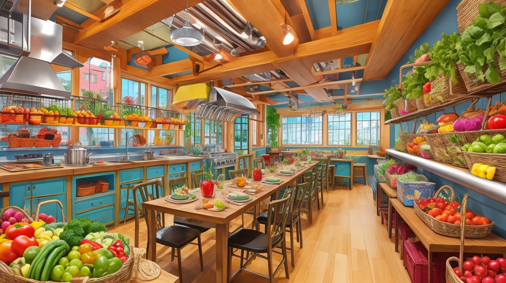
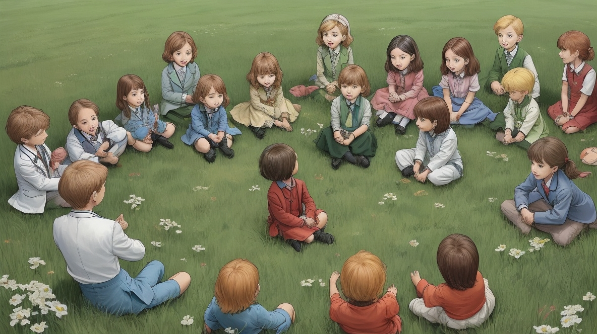

كان هناك يومًا ما، مدفونة بين تلال متدحرجة وحقول خضراء غناء، قرية بسيطة تُدعى ورقة الخضراء. في ورقة الخضراء، كان لدى كل منزل حديقته الصغيرة حيث يزرعون مجموعة من الخضروات والفواكه الزاهية. كان الهواء دائمًا مليئًا برائحة الحلوى الناضجة وغناء الطيور اللذيذ. كان أهل ورقة الخضراء معروفين في كل مكان بصحتهم الجيدة وطاقتهم اللامتناهية، حتى المسنون والأجداد كانوا يشاركون في المرح، يلعبون الرياضة والألعاب مع الأطفال.


كانت الحياة في ورقة الخضراء بسيطة ومبهجة حتى يوم واحد مشؤوم عندما وصل غريب غامض إلى القرية. بلمعة من عصاه السحرية، حول ركنًا قديمًا ومغبرًا إلى متجر حلويات سحري.
تم استحالة الأطفال في ورقة الخضراء من خلال الحلويات الملونة والشرارات التي ترقص في الهواء.
ببطء ولكن بتأكيد، بدأوا في الانغماس في متع الحلويات السكرية، يتبادلون وجباتهم الصحية من الحديقة بحلويات من أشكال وألوان مختلفة.

مع مرور الوقت، نمت شوارع ورقة الخضراء الحيوية إلى هدوء. استبدلت ضحكات الأطفال بأصوات البكاء والسعال. كانت القرية، التي كانت مليئة بالحيوية، تشهد الآن طوابير طويلة خارج المستشفى، مليئة بالأطفال المريضين. حتى كان كبار السن محيرين من هذا التغيير المفاجئ.

اجتمعت الأمهات المهتمات في ورقة الخضراء معًا، مصممات على استعادة الفرح والصحة في قريتهن. جمعن سلالًا من الفواكه والخضروات الطازجة، ومع الحب والرعاية، قامن بتحضير أطباق لذيذة مثل كعك الفراولة، والمارشميلو العلوية، ومتع الصحية الأخرى.

دعت الطبيبة الحكيمة والطيبة في ورقة الخضراء جميع الأطفال للتجمع حولها. بصبر ورحمة، شرحت لهم آثار السلبية لكثرة السكر ولماذا الحلاوة الطبيعية للفواكه خيارًا أفضل. علمتهم الفرق بين السكريات المصنعة الموجودة في الحلويات والسكريات الطبيعية الموجودة في الفواكه، وكيف أن الأخيرة تغذي أجسادهم وتجعلهم أقوياء ونشطاء.

بشوق، جرب الأطفال المأكولات اللذيذة التي أعدتها أمهاتهم. مع كل لقمة، اكتشفوا من جديد فرحة تناول الطعام الصحي، انفجار النكهات الراقصة على ألسنتهم. ببطء ولكن بتأكيد، عادت قرية ورقة الخضراء إلى عزها السابق. نمت الأطفال بصحة أفضل، وارتفع مستواهم من الطاقة، وعاد الضحك مرة أخرى ليملأ الهواء.
وهكذا، في قرية ورقة الخضراء، اختفى متجر الحلويات السحري في ضباب الذكريات، استبدل بعطاء الطبيعة الملونة الخاصة بالحلاوة الخاصة بالطبيعة. مع كل يوم يمر، عاش أهل ورقة الخضراء بسعادة دائمة، يقدرون هدية الصحة والسعادة التي ازدهرت من حدائقهم الخاصة.

لقد انتهيت من القصة.
حان الوقت للعبة الاختبار!